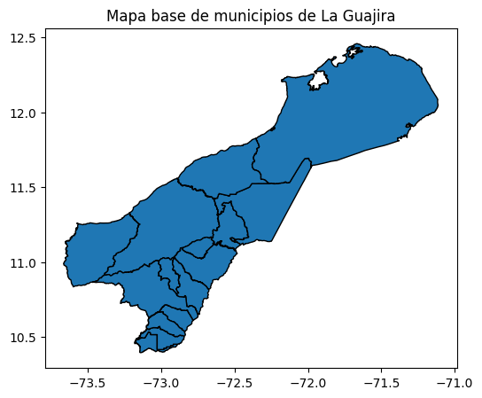
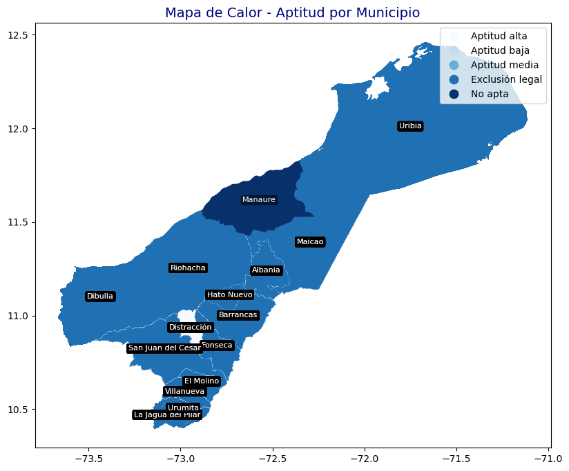
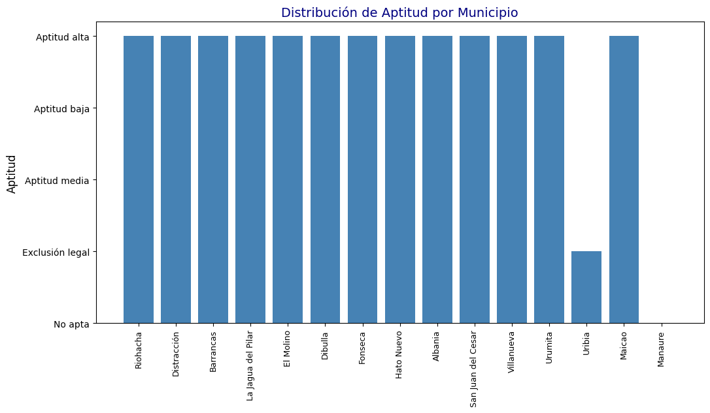
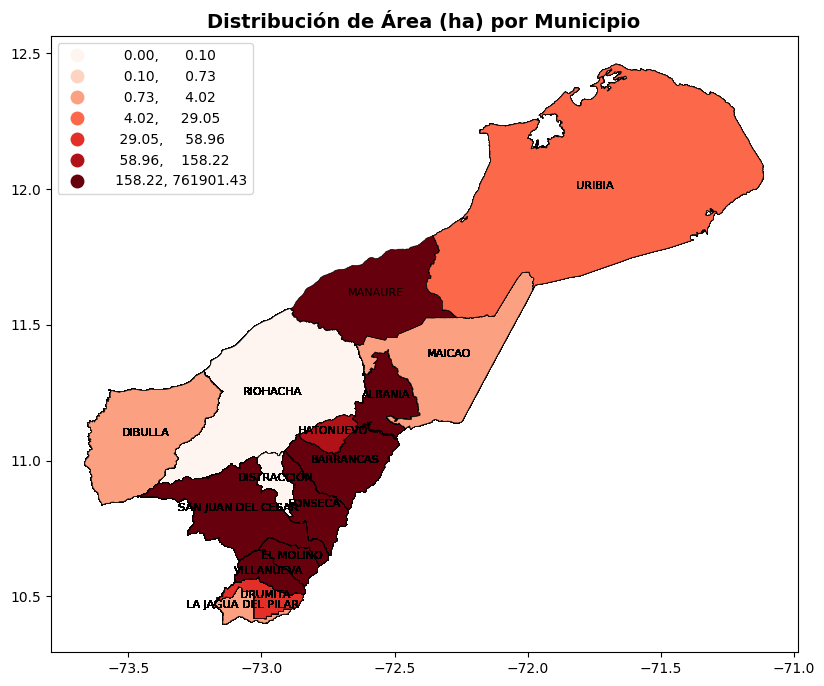
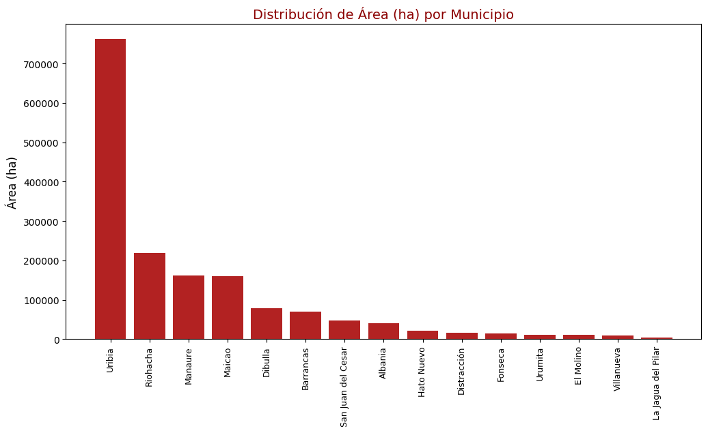

Librerias#
import pandas as pd
import geopandas as gpd
import matplotlib.pyplot as plt
Cargar Dataset#
df = pd.read_csv("Adopción_de_la_zonificación_de_la_producción_de_carne_bovina_en_pastoreo_para_el_mercado_nacional_y_de_exportación,_en_el_departamento_de_La_Guajira._20250915.csv")
df.head()
| the_geom | Municipio | Departamento | Código departamento | Código municipio | Gridcode | Aptitud | Área (ha) | Consecutivo | |
|---|---|---|---|---|---|---|---|---|---|
| 0 | MULTIPOLYGON (((-73.00736616834294 10.56002451... | Urumita | La Guajira | 44 | 44855 | 0 | No apta | 11,677.37 | 31 |
| 1 | MULTIPOLYGON (((-72.91600845748357 10.60465894... | Villanueva | La Guajira | 44 | 44874 | 0 | No apta | 9,948.54 | 73 |
| 2 | MULTIPOLYGON (((-73.07286681175579 10.61467517... | Villanueva | La Guajira | 44 | 44874 | 0 | No apta | 1,288.26 | 79 |
| 3 | MULTIPOLYGON (((-72.85101803256207 10.74133271... | San Juan del Cesar | La Guajira | 44 | 44650 | 0 | No apta | 7,068.29 | 194 |
| 4 | MULTIPOLYGON (((-72.7814801880347 10.611536830... | El Molino | La Guajira | 44 | 44110 | 0 | No apta | 0.00 | 101 |
Validacion de datos#
# Revisar valores nulos
faltantes = df.isnull().sum()
# Revisar duplicados
duplicados = df.duplicated().sum()
tabla_validacion = pd.DataFrame({
"Valores Faltantes": faltantes,
"Duplicados": [duplicados] + [""]*(len(faltantes)-1)
})
tabla_validacion
| Valores Faltantes | Duplicados | |
|---|---|---|
| the_geom | 0 | 0 |
| Municipio | 0 | |
| Departamento | 0 | |
| Código departamento | 0 | |
| Código municipio | 0 | |
| Gridcode | 0 | |
| Aptitud | 0 | |
| Área (ha) | 0 | |
| Consecutivo | 0 |
Preparacion del dataset#
df["Código municipio"] = df["Código municipio"].astype(str).str.zfill(5)
df["Código departamento"] = df["Código departamento"].astype(str).str.zfill(2)
Revisar las columnas#
df.columns
Index(['the_geom', 'Municipio', 'Departamento', 'Código departamento',
'Código municipio', 'Gridcode', 'Aptitud', 'Área (ha)', 'Consecutivo'],
dtype='object')
Creacion del Shapefile#
# Cargar shapefile de municipios
shapefile = gpd.read_file("C:/Users/mateo/Downloads/visualStudio/visualizacion/Georeferenciacion/docs/MGN2024_MPIO_POLITICO")
# Filtrar solo el departamento de La Guajira (código 44)
shapefile = shapefile[shapefile["dpto_ccdgo"] == "44"]
shapefile.plot(edgecolor="black", figsize=(6,6))
plt.title("Mapa base de municipios de La Guajira")
plt.show()

Union del datset con el Shapefile#
# Unir por código de municipio
gdf = shapefile.merge(df, left_on="mpio_cdpmp", right_on="Código municipio")
# Convertir a GeoDataFrame asegurando geometría
gdf = gpd.GeoDataFrame(gdf, geometry="geometry")
gdf.head()
| dpto_ccdgo | mpio_ccdgo | mpio_cdpmp | dpto_cnmbr | mpio_cnmbr | mpio_crslc | mpio_tipo | mpio_narea | mpio_nano | shape_Leng | ... | geometry | the_geom | Municipio | Departamento | Código departamento | Código municipio | Gridcode | Aptitud | Área (ha) | Consecutivo | |
|---|---|---|---|---|---|---|---|---|---|---|---|---|---|---|---|---|---|---|---|---|---|
| 0 | 44 | 001 | 44001 | LA GUAJIRA | RIOHACHA | 1954 | MUNICIPIO | 3088.634786 | 2024 | 3.03059 | ... | POLYGON ((-72.89025 11.55973, -72.89003 11.559... | MULTIPOLYGON (((-73.04962111720182 11.26270098... | Riohacha | La Guajira | 44 | 44001 | 0 | No apta | 218,496.48 | 518 |
| 1 | 44 | 001 | 44001 | LA GUAJIRA | RIOHACHA | 1954 | MUNICIPIO | 3088.634786 | 2024 | 3.03059 | ... | POLYGON ((-72.89025 11.55973, -72.89003 11.559... | MULTIPOLYGON (((-73.16357452252308 11.34440559... | Riohacha | La Guajira | 44 | 44001 | 0 | No apta | 0.00 | 529 |
| 2 | 44 | 001 | 44001 | LA GUAJIRA | RIOHACHA | 1954 | MUNICIPIO | 3088.634786 | 2024 | 3.03059 | ... | POLYGON ((-72.89025 11.55973, -72.89003 11.559... | MULTIPOLYGON (((-73.11195788762656 11.24212027... | Riohacha | La Guajira | 44 | 44001 | 0 | No apta | 0.80 | 549 |
| 3 | 44 | 001 | 44001 | LA GUAJIRA | RIOHACHA | 1954 | MUNICIPIO | 3088.634786 | 2024 | 3.03059 | ... | POLYGON ((-72.89025 11.55973, -72.89003 11.559... | MULTIPOLYGON (((-73.15947156542802 10.98878338... | Riohacha | La Guajira | 44 | 44001 | 0 | No apta | 1,054.44 | 616 |
| 4 | 44 | 001 | 44001 | LA GUAJIRA | RIOHACHA | 1954 | MUNICIPIO | 3088.634786 | 2024 | 3.03059 | ... | POLYGON ((-72.89025 11.55973, -72.89003 11.559... | MULTIPOLYGON (((-73.09447394012773 11.04672087... | Riohacha | La Guajira | 44 | 44001 | 1 | Aptitud baja | 4,058.14 | 1,911 |
5 rows × 21 columns
Mapa 1: Aptitud (Apta / No apta)#
fig, ax = plt.subplots(figsize=(12,8))
# Mapa con paleta azul
gdf.plot(column="Aptitud", cmap="Blues", legend=True, ax=ax)
# Etiquetas más visibles
for idx, row in gdf.iterrows():
plt.annotate(
text=row["Municipio"],
xy=(row.geometry.centroid.x, row.geometry.centroid.y),
fontsize=8, # más grande
color="white", # letras blancas
ha="center",
bbox=dict(facecolor="black", alpha=0.5, edgecolor="none", boxstyle="round,pad=0.2") # fondo negro semitransparente
)
plt.title("Mapa de Calor - Aptitud por Municipio", fontsize=14, color="navy")
plt.show()

gdf_sorted = gdf.sort_values("Aptitud", ascending=False)
plt.figure(figsize=(12,6))
plt.bar(gdf_sorted["Municipio"], gdf_sorted["Aptitud"], color="steelblue")
plt.xticks(rotation=90, fontsize=9)
plt.ylabel("Aptitud", fontsize=12)
plt.title("Distribución de Aptitud por Municipio", fontsize=14, color="navy")
plt.show()

import mapclassify
fig, ax = plt.subplots(1, 1, figsize=(12, 8))
gdf.plot(
column="Área (ha)",
cmap="Reds",
scheme="Quantiles",
k=7,
legend=True,
ax=ax,
edgecolor="black",
linewidth=0.5
)
# Agregar nombres de municipios en el centroide
for idx, row in gdf.iterrows():
plt.annotate(
text=row["mpio_cnmbr"],
xy=(row.geometry.centroid.x, row.geometry.centroid.y),
ha="center", fontsize=8, color="black"
)
ax.set_title("Distribución de Área (ha) por Municipio", fontsize=14, fontweight="bold")
plt.show()

gdf_sorted = gdf.sort_values("Área (ha)", ascending=False)
plt.figure(figsize=(12,6))
plt.bar(gdf_sorted["Municipio"], gdf_sorted["Área (ha)"], color="firebrick")
plt.xticks(rotation=90, fontsize=9)
plt.ylabel("Área (ha)", fontsize=12)
plt.title("Distribución de Área (ha) por Municipio", fontsize=14, color="darkred")
plt.show()
